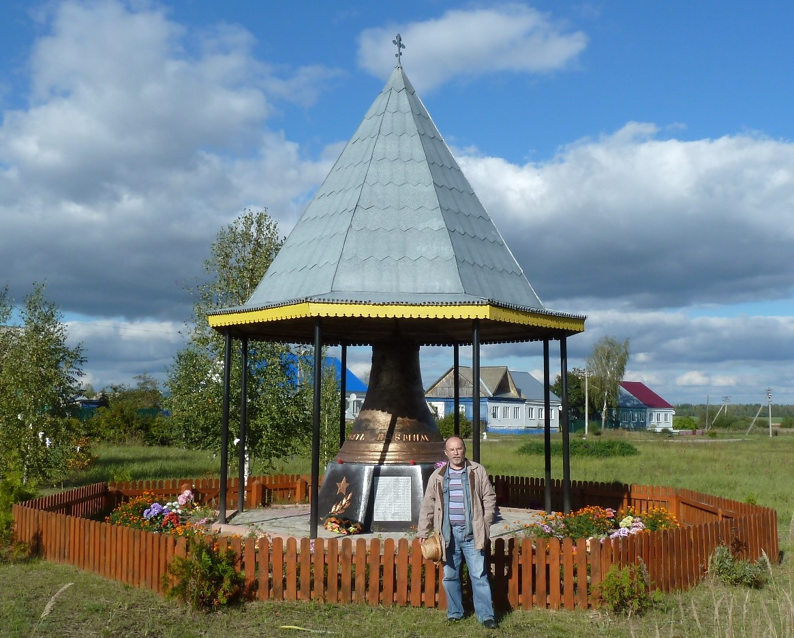
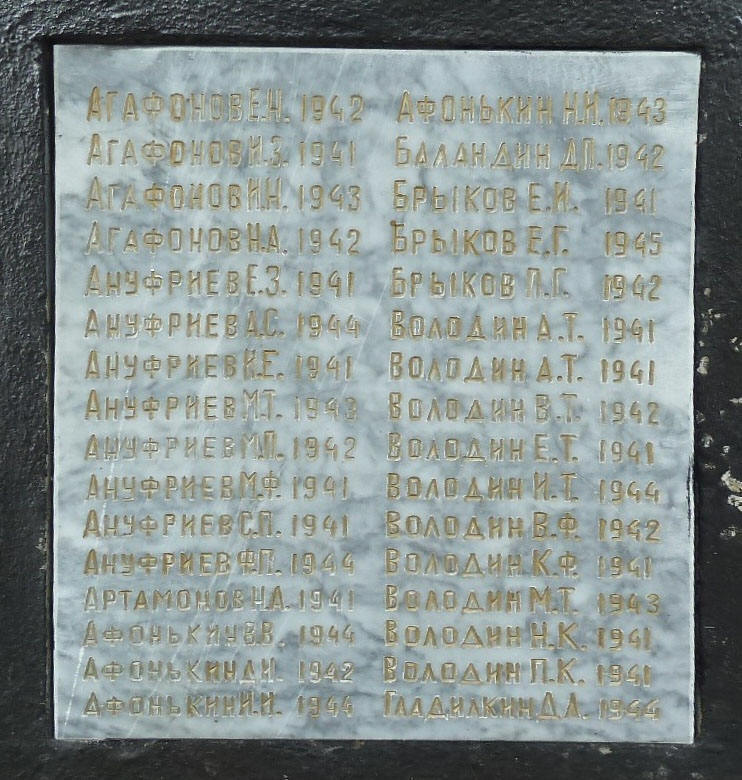
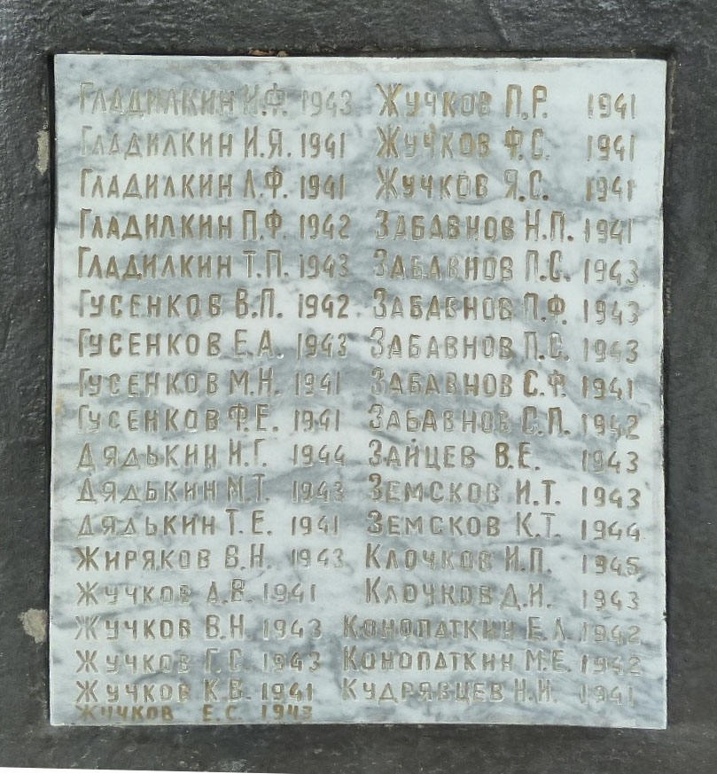
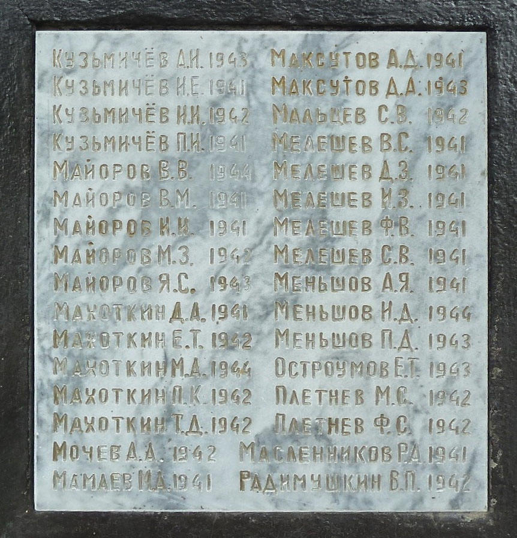
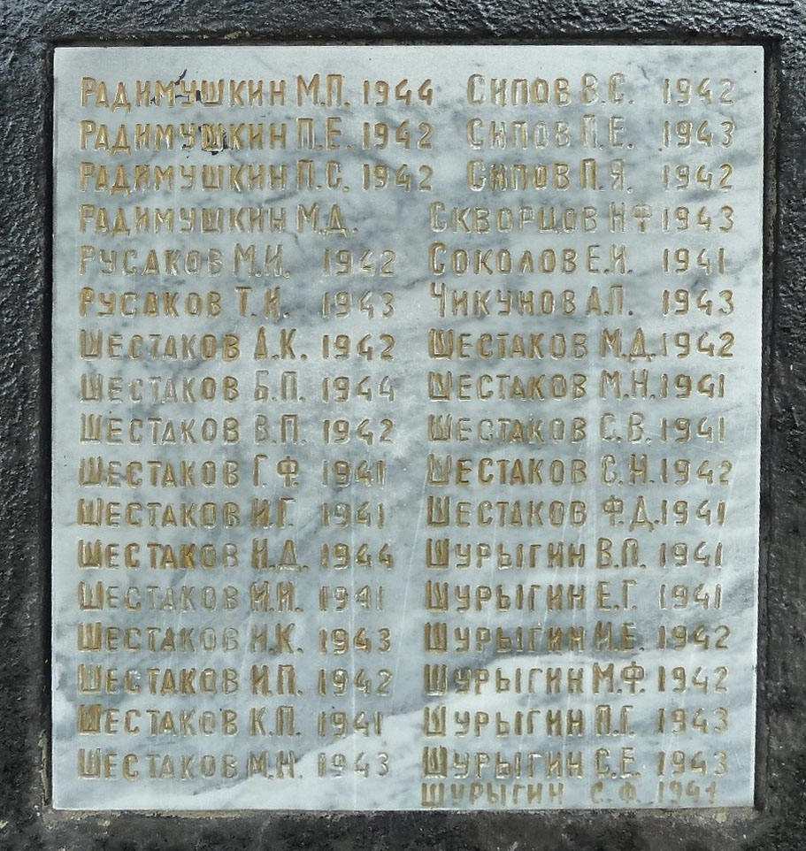

|
Осень 2016 Из справки госархива Рязанской области: «…д. Уляхино основана в конце 1850-х годов… В списке мест Рязанской губернии 1859 года указано, что во владельческой деревне Уляхино состояло 29 дворов и проживало 272 человека обоего пола…». Первыми жителями деревни стали переселенцы из деревни Парахино, расположенной в 6 км от нынешней «юбилярши». В 1857 году, как сказано в ревизской переписи 1858 года (первое упоминание официальное д. Уляхино), 19 крестьянских семей по воле владельца тех мест стеклозаводчика И.С. Мальцова переехали на новое место жительства. Деревня Парахино была основана после 1747 года из крепостных Мальцова, перевезённых из Можайского уезда Московской губернии. Они заготавливали дрова для стекольных заводов. Тогда по указу Сената все стекольные фабрики должны были быть перенесены на расстояние не менее 200 верст от Москвы. В ноябре 1750 годаАлександру Васильевичу Мальцову дано разрешение на перенос хрустальной и стеклянной фабрик из сельца Новое в Радутино в 500 верстах от Москвы, Аким Васильевич Мальцоврешил обосноваться в Мещёрском крае. Уже в 1756 году на месте выкупленного им села Никулино наречке Гусьвырос новый стекольный завод, давший начало знаменитому на весь мир Гусевскому хрустальному заводу. Сюда же перебрались лучшие мастера стекольного дела со своими семьями, образовался большой рабочий посёлок, сейчас город Гусь-Хрустальный. В 1905 году эта деревня упоминается как Умяхино (именно через «м») Парахинской волости при речке Нинуре. В ней насчитывалось 128 дворов и 840 жителей, действовала церковно-приходская школа для мальчиков и девочек, две кузницы и маслобойка. Основное занятие жителей – рубка леса на дрова для стекольных заводов Мальцева и частных лиц. В состав Владимирской области деревня Уляхино была передана в 1926 году.
 Фото: 2016 год, 18 сентября. Деревня Уляхино, где в 1919 году родился мой отец. Я у памятника 134 мужчинам, погибшим во время ВОВ 1941-1945 годов только из этой деревни. Примерно, каждый двор потерял мужчину. В 2017 году, депутат Госдумы Николай Земцов сообщил, что общая убыль населения СССР в 1941–1945 годах — более 52 млн. 812 тысяч человек или 27,21%. Согласно последним данным, на февраль 2017 года, потери Советского Союза воВторой мировой войне составляют 41 миллион 979 тысяч, а не 27 миллионов, как считалось ранее. Потери составили более 19 млн. военнослужащих. Великобритания потеряла – 379 тысяч человек, США — 408 тысяч человек, Франция – 665 тысяч человек. Всем проигравшая Германия потеряла 6 760 тысяч человек… В Первой Мировой Россия потеряла 700 тысяч человек. В сентябре 2008 года Уляхино отметило 150-летие. К этому юбилею, не в 1948 году, открыли памятник павшим. На день празднования в Уляхине значилось 587 постоянных жителей, а по состоянию на конец 2013 - 603. За последние 200 лет население района пережило пору крепостничества, время капитализации, эпоху диктатуры пролетариата и бедноты и возврат к началу капитализма без активного участия населения в собственности даже своей земли. Пока на сайте Гусь-Хрустального района только имена руководства района, остальные же души и их хозяйства, их дворы не упомянуты. Сегодня необходима открытость для активного взаимодействия, населению надо знать как и чем живут соседи, район, его жители конкретно по годам, селениям и дворам. На открытии памятника вряд ли было больше мужчин, чем фамилий вокруг этого монумента в виде колокола. Почему так поздно открыт памятник? У меня только одно объяснение - большевистский режим власти в СССР намеренно, через цензуру скрывал не только правду, но лишал житейского смысла многие поколения России ради удержания своей власти после преступлений пятилетки переворота и гражданской войны 1917-1922 годов. На мой взгляд, возрождение России в XXI веке следует начинать с общественного договора и с взаимного сострадания за перенесённые в XX веке беды. Этот памятник не только мужеству моих предков, но и вопиющей несправедливости к ним. Например, моя тётка Мария Кузьмичёва осталась с тремя детьми в начале войны и за мужа, вез вести пропавшего в битве под Москвой, не получают государстваникакой помощи. Ограничиваться сегодня простым спасибо деду за Победу - недопустимо. Всё население имеет все основания требовать от государственного аппарата материальной доли в национальном достоянии, в которое вложил свою жизнь их дед. Да и все остальные долги, долги предшествующим поколений теперешнему госаппарату давно пора отдавать нашему героическому и недопустимо бедному для современной жизни населению. Капитализация власти бюрократов прошла, теперь наступает очередь капитализировать подвиги предков в виде безусловного и постоянного дохода, например, как в Финляндии. Сколько же мужчин погибло только в этой деревне за годы её существования? Сколько потерь понесло население центральных районов России за 500 лет становления России? Что получило в итоге? На мой взгляд, памятник удачен. Памятный колокол призывает нынешнее поколение быть активными, жить полноценной жизнью хозяина своей и всей обширной земли, оставленной нам нашими предками за 1000 лет существования России, активнее участвовать в выборах и решениях политических проблем. Надо вернуться к поминанию павших воинов России в День святого Георгия 6 мая. История писалась только для царей и о царских семьях. Достоинство простого человека не учитывалось, царям и князьям так проще было и эксплуатировать их и отправлять на войну. О людях мало кто думал, разве что поэты. Государство же через 10 лет после войны своим постановлением ЦК КПСС и Совета Министров СССР от 25 марта 1955г. N577 "О мерах по дальнейшему укреплению колхозов руководящими кадрами" для колхоза в Уляхино смогло вложиться только в одного человека - в Гинина Степана Петровича. Однако в России уже тогда, после Победы в ВОВ, нужно было всё население, и в деревне, и в городе превращать в активных граждан по цепочке: накормить, вернуть и наделить собственностью, приобщить к политической культуре выбора, да и ресурсов для этого тогда хватало. На современном языке погибшие в ВОВ - обманутые дольщики, вложившие свои жизни в свободу и благосостояние страны за спасибо от внуков за победу. Нынешнее население деревни в этот осенний день убирало чипсовую картошку или шло за грибами-ягодами в близлежащий лес национального парка Мещёры, который беспощадно вырубается по его краям на глазах у моих земляков, которые уже вроде бы сыты, но всё ещё не чувствующих себя хозяевами на своей земле: нет собственности и политической культуры. Сильный лидер или сильная партия, как инструменты государственного управления, уходят в прошлое. Современная Россия возможна только при наличии активного населения, составляющего гражданское общество, политическую нацию на основе незыблемого достоинства каждого человека. Какие люди сегодня вкладываются в Россию? Можно ли назвать элитой прежний и нынешний правящий круг, без риска для своей жизни получающий дивиденды моментально. А что будет через годы или в горестные дни? Повторится ли самоотверженность в истории отечества, повторятся ли подвиги в этой деревни через 10, 30 и 50 лет?




Когда? В конце XV или в ХХ веке были подорваны жизненные силы народа, которому и к началу XXI века не удаётся стать гражданским обществом, нацией. На эти вопросы ещё предстоит ответить новым поколениям моих земляков. Примечание: 12 октября 2016 года Алексей Широпаев полагает, что история отечества могла быть иной. Не знаю, такой ли, как сейчас, была осень 1477 года, когда Иван Третий пошёл походом в Новгородскую землю, чтобы снять Вечевой Колокол. И он был снят. Роковой момент нашей истории. Новгород – это загубленная московщиной Возможность. Возможность формирования нормальной буржуазной нации. Возможность православной Реформации, уже сквозившая в новгородских ересях. Возможность демократии. Россия, созданная Москвой, противоположна и первому, и второму, и третьему. Россия ПО СУТИ антагонистична Европе. Лишь только Россия сформировалась как феномен, она немедленно вступила в конфликт с Ближней Европой – с Новгородом. То, что эта Европа своя, русская, вызывало в Москве ОСОБУЮ ненависть. Россия садистски убила Новгород и великим насилием сформировала свой, ОСОБЫЙ тип русскости. Московитский тип. Триединый тип служаки, империалиста и раба. Если бы победил Новгород, мы не узнали бы опричнины, царизма, крепостничества, Ленина и Сталина. Мы были бы ДРУГИМИ. И страна у нас была бы совсем другая. Да, мы, возможно, не подарили бы миру Достоевского. Зато имели бы правовое общество, конституцию. А она, конституция, куда важнее Достоевского, как показывает исторический опыт. Особенно российский. Короче, Новгород – это всё то, что с колоссальным историческим опозданием, спустя пять веков, пытался наверстать Февраль, и с ещё бОльшим опозданием – Август. Дико, бредово затянувшийся и трагически неравный спор между перманентным Средневековьем и Развитием... Поскребли русского — нашли... русского! Гражданская нация в России: нужна ли и возможна ли?
Одно всегда - требование каждого человека делиться к более
богатому, сильному и умному человеку и сообществу и... |